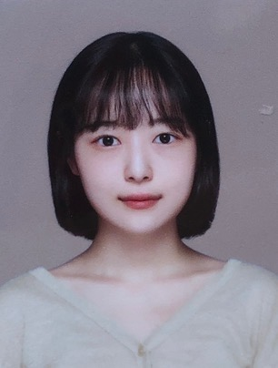

안녕하십니까. 단국대학교 소프트웨어학과 19학번 김채인입니다.

무남4녀의 집에서 셋째딸로 태어났습니다.
저는 올해 24살이지만, 이미 졸업한 동기들과는 달리 저는 아직 3학년입니다.
2020년부터 2022년까지 휴학하면서 집안사정으로 집에서 독립하여 돈을 벌었습니다.
학교 다닐 때 가장 서러웠던 게 아르바이트 하면서 학업을 하려고 하니 몸이 따르지 못하는 것이었습니다
그래서 복학하면 아르바이트 안하려고 낮에는 피자헛에서 아르바이트를 하고, 밤에는 쿠팡물류센터에서 일하며 악착같이 돈을 모았습니다.
지금은 집안의 문제도 해결되어 다시 본가로 돌아오게 되었고, 모아둔 돈으로 어머니 차를 사드릴 수 있게 되었습니다.
몸은 많이 힘들었지만, 제 인생에서 많은 경험을 할 수 있었던 값진 시간이었습니다.
지나고 보니, 저는 항상 잘 이겨내는 사람이었습니다.
제 인생에서 힘든 순간이 닥쳐와도 주변 사람들의 도움과 제 의지로 극복해내고, 나아갔습니다.
독학으로 3개월 만에 수능 탐구 영역 9등급에서 1등급으로 상승했던 경험
처음 대학교 들어와서 전공 과목 1등 했던 경험
내 자신을 위해 독립을 결심하고 실행헸던 경험
2년동안 한달 중 29일을 일하며 내 계획을 이행하고자 노력했던 경험
독학으로 혼자서 운전면허 취득한 경험
다른 컴퓨터전공 친구들이 가지고있는 경험에 비하면 일상의 사소한 경험들 뿐이지만,
저는 이러한 경험들 덕분에 "나는 뭐든지 해낼 수 있다!"고 믿습니다.
비록 지금은 많이 모자랄지라도, 저는 어떻게 해서든지 하고자하는 바를 이루어낼 것입니다.
금방 다른 친구들을 따라 잡을 거고, 세계 최강 프로그래머가 될 것 입니다.